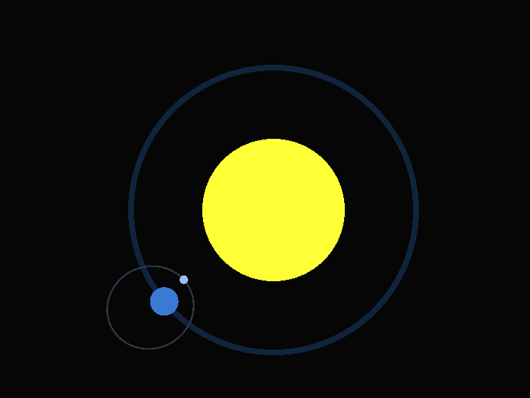
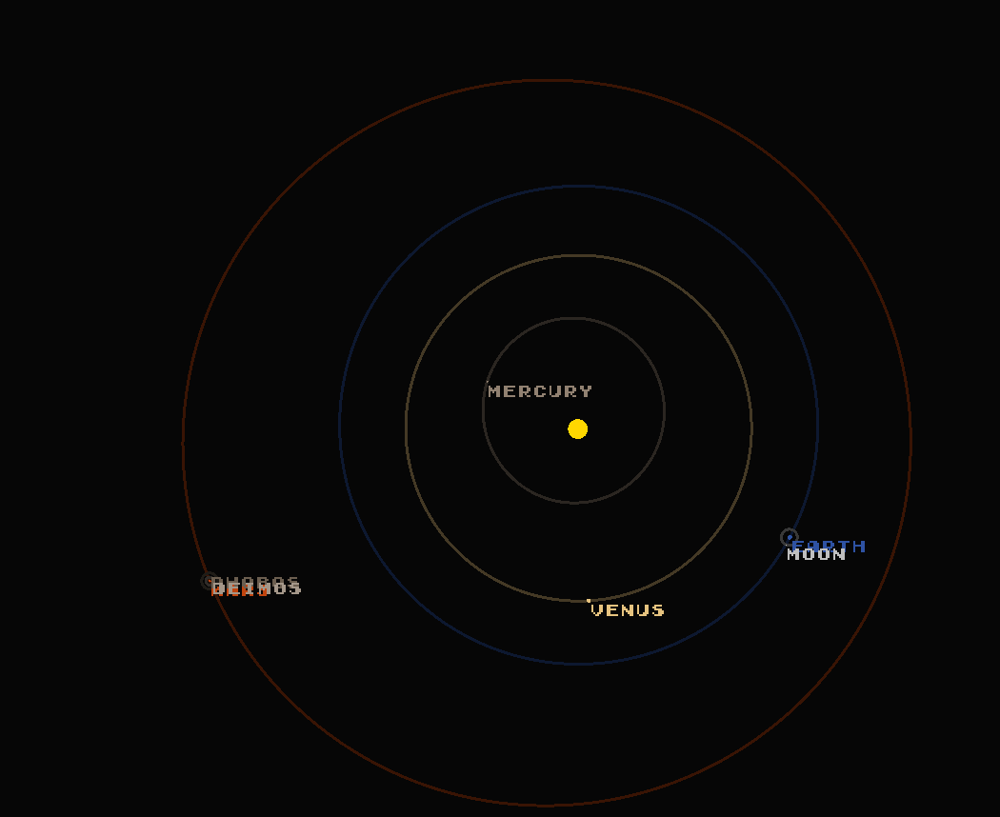
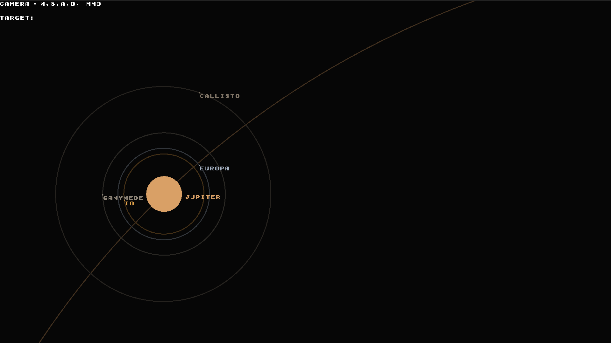
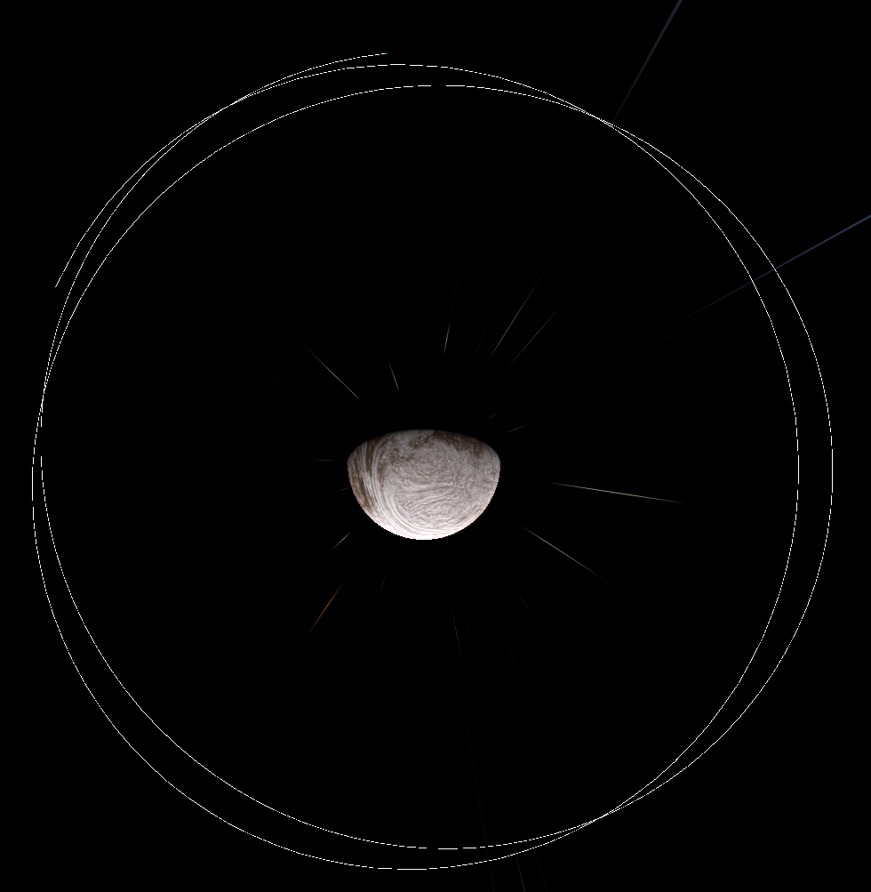
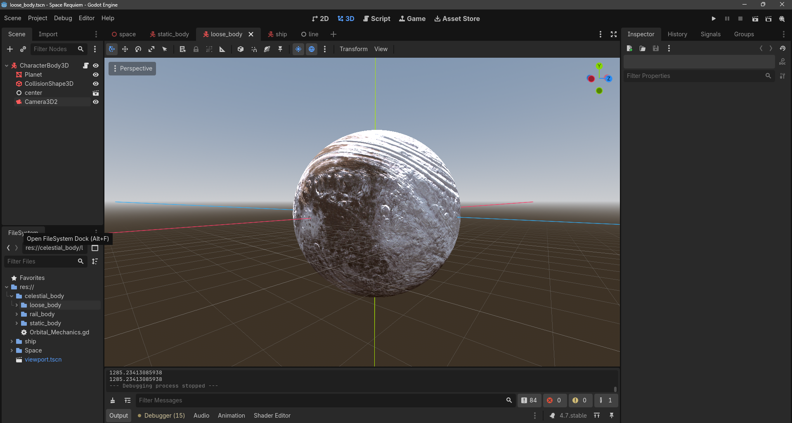

ORBITAL MECHANICS
Here I tried to create a physics system, completely dependent on a gravitational equations. Later I settled on Kepler calculations, as they were more predictable.



I've also made basically the same thing in 3D using the gravitational equations.

With the extreme lighting condicions of space environment, I've tested how to work with somewhat advanced texture techniques.
